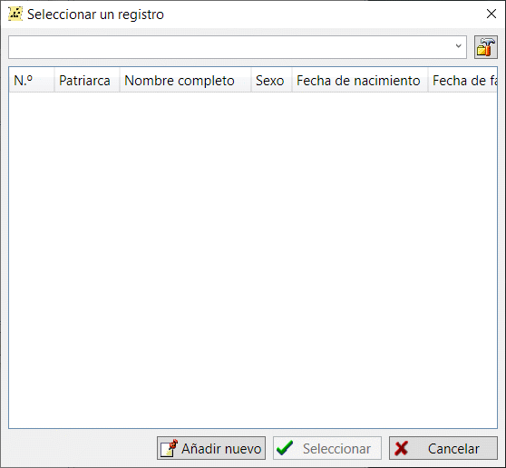

El cuadro de diálogo de selección de registros aparece en muchos lugares de GEDKeeper. Cada vez que tengas que añadir o seleccionar un registro a otro, verás este cuadro de diálogo. El cuadro de diálogo de selección de registros tiene tres funciones principales: seleccionar un registro que tenga un tipo específico, filtrar entradas por parte de sus nombres y añadir un registro necesario si no existe.
Cuando aparece el cuadro de diálogo, contiene una lista de registros en función del tipo de registro. Cuando añades un nuevo registro de persona para un padre o un hijo, el diálogo te mostrará todas las personas disponibles en la base de datos. Cuando adjuntes un archivo a una fuente, el cuadro de diálogo de selección de registros contendrá una lista de archivos. Cuando añadas una localización para un evento, el diálogo mostrará todas las localizaciones disponibles.
Por ejemplo, el diálogo de selección de registros aparece cuando editas una persona y necesitas añadir un padre a esta persona. En primer lugar, se supone que el progenitor ya ha sido añadido y puede intentar encontrarlo utilizando filtros. Cuando estés seguro de que la persona padre no está en la base de datos, puedes hacer clic en el botón "Añadir nuevo" para añadir al padre.

Ver también: Tipos de registro.